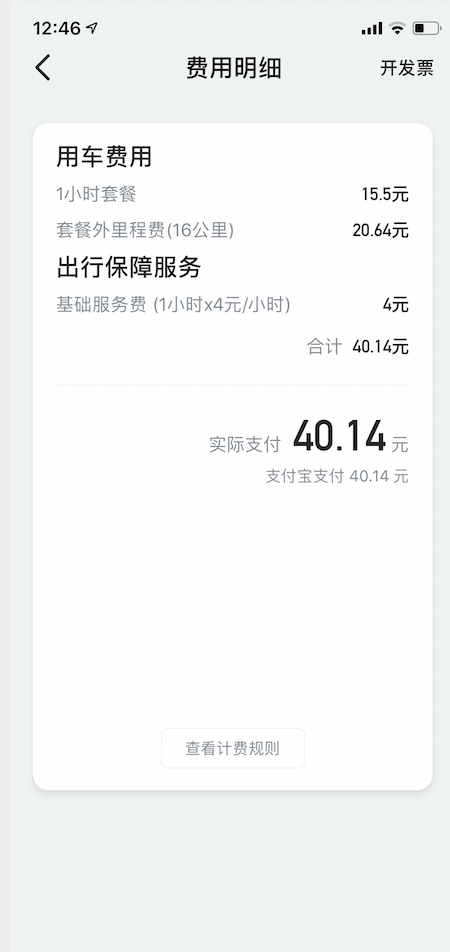
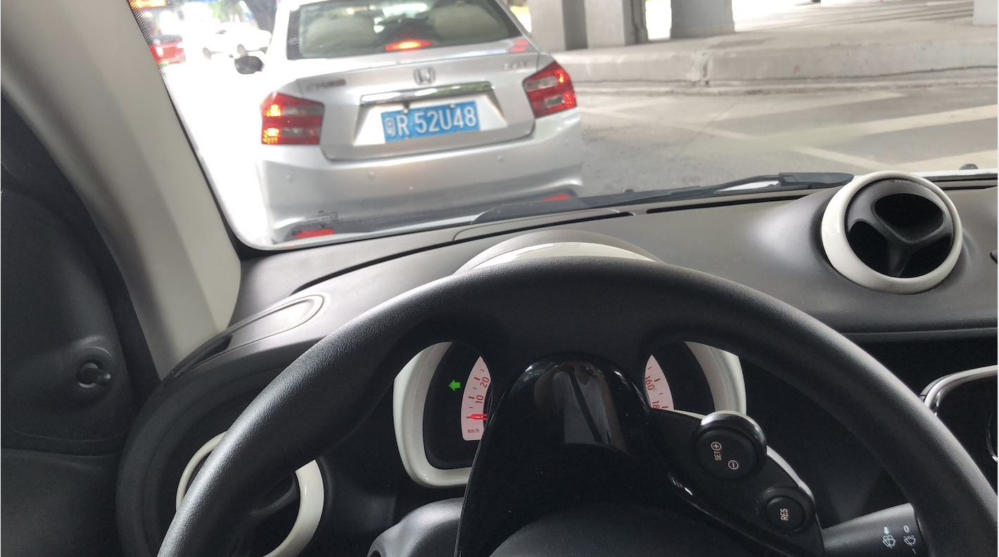
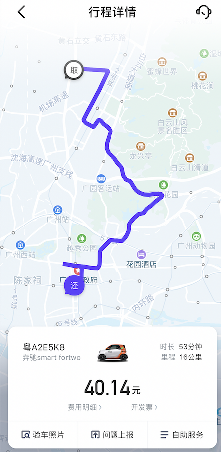

首驾
今天是我自7月15日拿到驾照的第一次独自驾车(16号开我爸的车只是简单的热热手).
我想分享下第一次开车的体验吧.
- 车型及共享汽车体验
- 路况
- 进步与瑕疵
- 总结
车型及共享汽车体验
首先来讲讲我开的小车车吧! 由于国内的共享汽车还是不够成熟, 我能选到的停车场(取车地)距离家1km左右.
由于他必须要在预定的后的15分钟上车, 我只能快到地方了再预定. 谁知, 倒地的前一分钟车被别人订走了.
本来是一个4门的 大众Polo , 后来没办法只能选一辆小 Smart 了.
这车的第一感觉就是: 天哪! 这怠速响应怎么这么慢, 一点都不线性, 刹车全松了要过整整一秒车才会动!
跑起来以后的确是跟朋友说的一样, 踩着地板油没有啥反应. 除此之外, 不得不吐槽一下 GoFun 对于
油车的收费实在是坑爹, 要加收1.29元/公里. 电车就是只用收取0.3元/分钟, 并不限制里程. 并没有倒车雷达…
最要命的是还车的地方特别不固定, 我到第一个还车点的时候还停满了只能前往下一个.
还车的地方距离我的目的地有个1.5km的样子. 那为啥不坐地铁/打滴滴?
总而言之就是在广州如果要出行的话就没必要考虑共享汽车了. 坐地铁吧~

吐槽了这么多, 这车到底有啥优点呢… 不知道… 方向盘挺轻的… 感觉并不是一辆值得买的车吧.

路况
广州的路况还是对开车的人很不友好的(尤其是对新手). 大部分车的素质都很差, 疯狂变道疯狂加塞. 为了安全,
我也是只能让他们了, 反正也不差这一点时间. 更讽刺的是, 让了他们之后他们还要迟疑一下, 仿佛我是该直接冲上去挤他们才对.. LOL
道路规划也是非常奇怪, 很多的环形路很多的立交, 我看着导航都开错了两次路.

进步与瑕疵
总的来说, 第一次自己开车主要是先体验一下真正的路面吧. 感觉自己熟悉的还是挺快的, 变道啊加塞的. 开的也比在驾校的时候
稳多了. 缺点呢.. 也很明显吧.. 首先就是停车. 的确是和驾校学的太不一样了, 停的歪歪的, 还是要多加练习吧.
然后就是起步时候还是会偶尔顿一下, 对油门的掌控度还是没那么好. 最后就是对广州的路实在是太不熟悉了, 身为
一个老广州人, 实在是羞愧. 有个地方开错了不得已变道回来压了实线, 希望没被拍到吧.
总结
第一次开车还是挺有感觉的, 有点点压力, 有点点激动. 一个人的上拥挤的道路, 时不时的看着腿上的导航来确认接下来复杂的道路. 要是副驾上坐着可爱的九儿就好了 <3. 期待自驾游!
Blog
说了这么久要继续做这个网页和学习 .md 的写法, 一直没有落实呢. 今天想着就算现在不找工作也要把该做的工作做好,
该准备的东西准备好. 这个Po就是一个开始, 记录我林东儿又开始学习惹! 我要把这个网页完善好, 对project的demo也做好.
过几天也要开始整理我的project们了. 当时写的确实是乱. 然后要开始着手做一个Python的project了~ 想都知道partner是谁~
记下要点
- 完善网页
- 修改projects
- 写新滴Python滴
健身
今天也是我上周健身完之后的又一次健身. 我发现我的肌肉恢复速度是真的慢的惊人, 我不知道究竟是我上次因为太久没练导致
的肌肉拉伤还是就是纯粹恢复太慢. 买了两盒 MuscleTech 的蛋白能量棒(喝蛋白粉总是拉肚子)来试一下. 如果恢复的不错
东二的大胸肌就要出来辣hiahiahia~